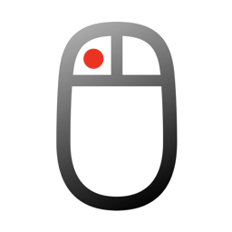
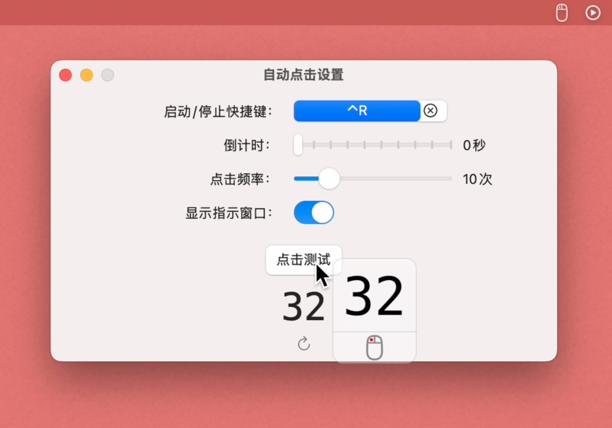

自动点击

功能介绍
让鼠标自动点击
Make the mouse click automatically

使用快捷键，快速启动鼠标点击
可以设置最多1秒钟100次，最少10秒一次
可以设置一个倒计时，为点击做准备
Use shortcut keys to quickly start mouse clicks
You can set a maximum of 100 clicks per second and a minimum of once every 10 seconds
You can set a countdown to prepare for the click